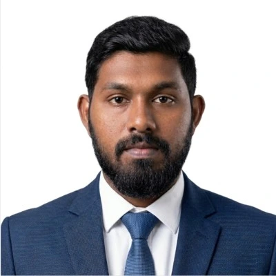

Model & develop
SolidWorks · Solid Edge · AutoCAD
3D CAD, assemblies, engineering drawings, design for manufacturabilityMECHANICAL ENGINEERING UNDERGRADUATE
I’m Thisara Nethsara — a third-year undergraduate at the University of Moratuwa, exploring how thoughtful mechanical design becomes practical, working systems.

01 / ABOUT ME
I enjoy the space between understanding how something works and making it work better.
My interests span machine design, automated manufacturing, control systems, and energy systems. Through team projects, I’ve worked on power transmission systems, autonomous robots, reverse engineering, and hands-on fabrication.
I combine CAD and engineering analysis with practical workshop experience, and integrate mechanical structures with electronics and control. I’m looking for an internship where I can contribute, learn from experienced engineers, and take on real industry challenges.
02 / SELECTED WORK
Design studies, working prototypes, and manufacturing projects. A closer look at the process behind the outcome.
03 / ENGINEERING TOOLBOX
A multidisciplinary foundation across design, simulation, programming, and the workshop.
SolidWorks · Solid Edge · AutoCAD
3D CAD, assemblies, engineering drawings, design for manufacturabilityANSYS · MATLAB · Tecnomatix
FEA, dynamic modeling, production workflow simulationPython · C++ · Arduino · PIC
OOP, PID control, PLC ladder programming, STEP 7 MicroWIN, FluidSimMachining · Welding · Drilling
Turning, cutting, bench fitting, fabrication, practical assembly04 / BACKGROUND
Engineering education, academic achievements, and sharing knowledge beyond the classroom.
Download full CV ↓B.Sc. Engineering (Hons) in Mechanical Engineering
G.C.E. Advanced Level · Physical Science
IEEE Student Branch · University of Moratuwa
Delivered a hands-on Arduino seminar for students through GAMMADDATA IEEE API 4.0, supporting applied engineering learning across Sri Lanka.
Student Affiliate Member
05 / GET IN TOUCH
I’m open to mechanical engineering internship opportunities and conversations about design, manufacturing, and automation.